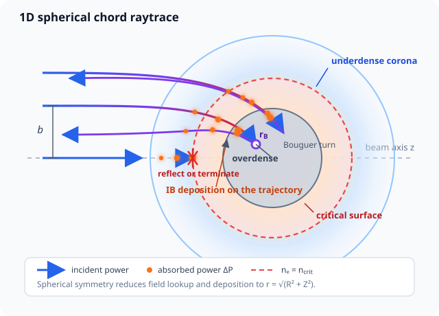
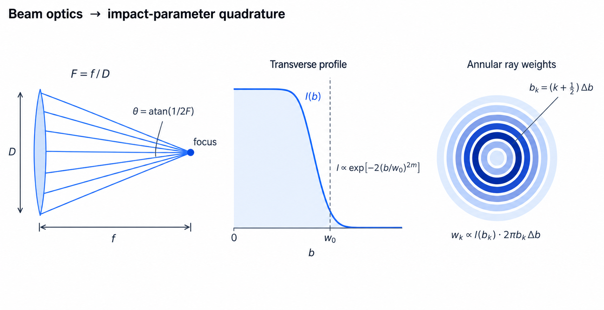

Laser drive & absorption reference
TENRYU constructs ray bundles from beam optics and time waveforms, solves plasma refraction and inverse-bremsstrahlung (IB) absorption, and heats the electron system. The default 1D spherical path tracks chords in an \((R,Z)\) plane with radial field lookup; 2D RZ tracks 3D rays through an axisymmetric field.
Physical mechanism
An electromagnetic wave in plasma obeys the dispersion relation \(\omega^2=\omega_{pe}^2+c^2k^2\). The plasma frequency \(\omega_{pe}\) rises with electron density, so to the laser the plasma is a refractive medium with index \(n=\sqrt{1-n_e/n_{\rm crit}}\) — smaller the denser the plasma. The critical density \(n_{\rm crit}\) is where the local plasma frequency reaches the laser frequency and propagation stops; it scales inversely with the square of the laser wavelength (\(\lambda^{-2}\)), so frequency-tripled 351 nm light reaches nine times higher density than the 1053 nm fundamental. As in ordinary optics, light bends toward the higher refractive index — here the low-density side — so rays bend down the density gradient, away from the dense core. Light cannot propagate beyond the critical surface: a normal-incidence ray reflects there, while an oblique ray turns around earlier, at its Bouguer radius (defined below). Geometric optics — treating the wave as a bundle of rays — applies because the wavelength is tiny compared with the corona's density-gradient lengths.
The plasma absorbs through inverse bremsstrahlung (IB): electrons quiver collectively in the wave field, and electron–ion collisions randomize that ordered quiver energy into heat. The conversion rate is set by the electron–ion collision frequency, giving the absorption coefficient \(\kappa_{\rm IB}\propto \hat n\,\nu_{ei}/\sqrt{1-\hat n}\) (where \(\hat n=n_e/n_{\rm crit}\) is the electron density normalized to critical) with \(\nu_{ei}\propto \bar Z n_eT_e^{-3/2}\ln\Lambda\). Since \(\nu_{ei}\) is itself proportional to \(n_e\), absorption grows as the density squared (\(\kappa_{\rm IB}\propto\hat n^2\) apart from the near-critical factor), and the \(T_e^{-3/2}\) makes cold plasma absorb more strongly. The factor \(1/\sqrt{1-\hat n}\) is the group-velocity slowdown near critical: light that travels more slowly lingers near the critical surface and absorbs more. A resolved underdense corona is therefore a physical prerequisite, not a numerical convenience: at a hard vacuum–solid jump, rays reach critical with no low-density path along which absorption could have happened, and reflect essentially unabsorbed. The practical-requirement box below quantifies the consequence.
The v1 default drive is collisional IB along refracted geometric rays. Wave optics (interference and speckle), resonance absorption at the turning point, and kinetic corrections to the IB rate such as Langdon-effect non-Maxwellian distributions and screening are not default terms. An opt-in extended-absorption package is available only in 1D and is off by default; separate CBET and hot-electron kernels cover the laser–plasma-interaction channels that TENRYU does model.
The implementation keeps two promises: determinism and conservation. On the determinism side, beam-waveform callables are frozen into tables at initialization so no Python runs during the simulation, and per-ray deposits pass through fixed-order per-beam reductions, making the results bitwise reproducible. On the conservation side, every call closes the energy ledger "incident = absorbed + unabsorbed" exactly; how each ray ended — critical-surface escape or deposit, mesh exit, or intensity cutoff — decides which side of that ledger receives its residual power.
The 1D spherical chord raytrace
The fluid state depends only on radius, but ray kinematics are solved in a beam-local \((R,Z)\) plane to retain oblique path length and refraction. The radius \(r=\sqrt{R^2+Z^2}\) selects density, temperature, and ionization; absorbed power goes directly to the corresponding hydro cell. By spherical symmetry, beams with the same F-number and profile share one normalized trace, scaled by their summed powers.
The plasma refractive index and ray equation are
$$ n_{\rm refr}=\sqrt{\max(\varepsilon_n,1-\hat n)},\qquad \hat n=\frac{n_e}{n_{\rm crit}},\qquad \frac{d\mathbf v}{dt}=-\frac{c^2}{2}\nabla\hat n. $$- \(\varepsilon_n\) (namelist
Laser.absorption.eps_n, default \(10^{-4}\)) floors \(n_{\rm refr}\), keeping both the index and IB denominators finite at critical; the CBET prefactor uses the same floor. - \(d\mathbf v/dt=-\tfrac{c^2}{2}\nabla\hat n\) is the time-parametrized ray equation. It is motion in the effective potential \(c^2\hat n/2\), so symplectic steppers can integrate its trajectories.
- \(B=n_{\rm refr}(r)r\sin\alpha\) is the spherical Bouguer invariant, expressing conservation of ray angular momentum in a radial index. Its drift is the trace-quality audit used by the verification gates.
- In \(\kappa_{\rm IB}=\hat n\nu_{ei}/[c\sqrt{1-\hat n}]\), \(\hat n\nu_{ei}\) is collisional conversion of quiver energy, \(1/\sqrt{1-\hat n}\) is group-velocity slowdown, and \(\nu_{ei}(T_e,\bar Z,\ln\Lambda)\) is evaluated in cgs + eV.
- \(\Delta P=-P\operatorname{expm1}(-S)\) computes the absorption of the ray power \(P\) from the trapezoidal optical depth \(S\). Evaluating with
expm1instead of subtracting \(1-e^{-S}\) directly avoids catastrophic cancellation in optically thin (\(S\ll1\)) segments. Each segment's loss deposits at its midpoint and the power updates by difference, so summing the losses along one ray telescopes — adjacent terms cancel — and reproduces the entry-minus-exit power exactly. - \(w_k\) is the profile value times the exact annular area, normalized over all annuli, so the ray bundle carries the specified beam power.
For a spherically symmetric refractive index, the Bouguer invariant \(B=n_{\rm refr}(r)\,r\sin\alpha\) (with \(\alpha\) the angle between the ray and the radial direction) is constant along the path — the optical analogue of angular-momentum conservation in a central force field. At a turning point the ray runs perpendicular to the radius, \(\alpha=\pi/2\), so the turning radius — the Bouguer radius \(r_B\) — is the solution of \(B=n_{\rm refr}(r_B)r_B\). Rays with different impact parameters \(b\) turn smoothly at different depths and undergo inverse-bremsstrahlung absorption on both the inbound and outbound legs; only a nearly head-on \(b\approx0\) ray fails to turn and terminates at the critical surface.

Beam optics, spot profile, and waveform
The F-number \(F=f_{\rm focal}/D_{\rm lens}\) gives half-angle \(\theta_{\rm beam}=\tan^{-1}(1/2F)\) and aperture \(R_{\rm beam}=|Z_{\rm init}-Z_{\rm focus}|/(2F)\). In 1D, contiguous annuli use \(b_k=(k+1/2)\Delta b\) and exact area \(\Delta A_k=\pi[(k+1)^2-k^2]\Delta b^2\).
The Gaussian or super-Gaussian relative intensity and ray weights are
$$ I(b)\propto \exp\!\left[-2\left(\frac{b}{w_0}\right)^{2m}\right],\qquad w_k=\frac{I(b_k)\Delta A_k}{\sum_j I(b_j)\Delta A_j}. $$\(w_0\) is the \(e^{-2}\)-intensity radius. \(m=1\) is Gaussian; larger \(m\) flattens the top. In 2D RZ, the profile is sampled on a circular array normal to the beam axis.
LaserBeam.power(t_s) accepts seconds and returns watts. Initialization samples it through Main.t_end into a frozen linear table. Studio generates a square pulse with optional rise/fall, a Gaussian from peak or energy plus FWHM and center, or a piecewise-linear point/CSV table.

LaserMesh1D and the ray march
In 1D spherical geometry, one beam-local RZ structure is induced from a graded radial node set: its Z nodes mirror the R nodes about zero, and the ray kernel reads radial lookup arrays extracted on \(Z=0\). In 2D RZ, the single LaserMesh is aligned with the fluid symmetry axis and its node geometry remains fixed after initialization. The operational march against these geometries is ordered below.
One laser call, step by step
Rebuild and map. Rebuild LaserMesh1D with a fine band around critical whose spacing is
mesh_factor(namelistLaser.absorption.mesh_factor, default 0.5) times the smallest nearby hydro width, then coarsen geometrically toward both the core and corona. Map \(\rho,\bar Z,T_e\), form \(n_e\), and use the segment-consistent linear interpolant whose \(d\hat n/dr\) is its exact derivative.Build rays. Look up each beam's power \(P_b(t)\) from its frozen waveform table. In 1D, place annuli at \(b_k\) with exact areas and profile weights. Beams with identical optics share one normalized trace, scaled by their summed power.
March each ray. The 1D path uses variable-step velocity Verlet, re-centering the previous half-kick and current half-kick at the current position with no seed kick. The ray equation is Hamiltonian, so a symplectic integrator keeps the conserved quantity — the Bouguer invariant, in spherical symmetry — free of systematic drift. The earlier staggered leapfrog, which stores velocity a half-step apart, loses that property once the adaptive controller changes \(ds\): the phase centering breaks and each substep dissipates the Hamiltonian by \(O(\hat\nabla\hat n\,\mathrm d\Delta s)\) — measured as a turning point too shallow by 0.027 in \(\hat n\) and a 22% loss of round-trip optical depth. Re-taking both half-kicks at the current position removes the mismatch; the analytic gate measures a turning-point error of \(1.1\times10^{-5}\) in \(\hat n\) and a 0.008% round-trip optical-depth error (the replacement is 1D-only; the 2D tracers keep the frozen staggered scheme). Gradient and optical-depth metrics can grow \(ds\); only the turning-angle target can shrink it. Vacuum legs end at exact chord–sphere intersections, and a vacuum-to-material hand-off pins the next lookup interval to the material side.
Deposit each segment. Form the trapezoidal optical depth \(S\), evaluate \(\Delta P=-I\operatorname{expm1}(-S)\), and deposit that loss at the segment midpoint.
Terminate. At \(\hat n\ge1-\varepsilon_{\rm crit}\) (
Laser.absorption.eps_crit, default \(10^{-4}\)), apply the analytic near-critical tail closure, then assign residual power according to the critical escape/deposit mode. Mesh-exit and intensity-cutoff residuals go to unabsorbed.Reduce and close. Reduce per-ray deposit rows in fixed order per beam, then heat radial hydro cells in 1D or the four bilinear neighbors in 2D RZ. Assert incident = absorbed + unabsorbed.
Use or invalidate the skip cache. If the cached plasma state changed by less than the selected norm threshold, reuse the trace and rescale it by per-beam power—exact for linear IB. Retrace on step 0; when the plasma change reaches the threshold (default 0.01); after
max_consecutiveskips (default 10); on total-power zero/nonzero transitions; on any group zero/nonzero transition when multiple groups exist; when total power changes by more than 1%; when any beam direction changes by L2 norm more than \(10^{-10}\); after ALE rezone; or when any cell approaches the near-critical margin, \(\hat n>\hat n_{\rm margin}-\varepsilon_{\rm crit\_guard}\) (\(\hat n_{\rm margin}\) is the cached trace's recorded maximum admissible \(\hat n\); the guard,Laser.absorption.crit_guard, defaults to 0.01). With CBET on, a greater-than-1% relative power change in any beam group is an additional retrace trigger because CBET is nonlinear.radial_absorption_1dnever uses this cache.
IB deposition, the critical surface, and termination
The IB coefficient \(\kappa_{\rm IB}=\hat n\nu_{ei}/[c\sqrt{1-\hat n}]\) includes the slowing group velocity; \(\nu_{ei}\) uses \(T_e\), \(\bar Z\), and the Coulomb logarithm in cgs + eV. For \(S=(\kappa_n+\kappa_{n+1})\Delta s/2\),
$$ \Delta P=-P_n\operatorname{expm1}(-S),\qquad P_{n+1}=P_n-\Delta P, $$avoids thin-segment cancellation; \(P_n\) is the ray's carried power at segment \(n\) (distinct from the beam-profile intensity \(I(b)\) above). \(\Delta P\) is deposited at the segment midpoint. Because the power updates by difference, summing the losses along one ray telescopes — adjacent terms cancel — so \(\sum\Delta P=P_0-P_{\rm final}\) holds exactly up to rounding.
A ray terminates at \(\hat n\ge1-\varepsilon_{\rm crit}\). The 1D near-critical tail closes its remaining optical depth analytically. Default terminate_mode="escape" records residual power as unabsorbed reflection/scatter; "deposit" dumps it into an allowed critical-adjacent receiver. This dump is not path-integrated IB and should be intentional. Mesh-exit and intensity-cutoff remainders are unabsorbed, closing incident = absorbed + unabsorbed.
2D RZ and the simple radial mode
In 2D RZ, raytrace_3d follows \((x,y,z)\), reading axisymmetric \(\hat n(R,Z)\) at \(R=\sqrt{x^2+y^2}\) and transforming its gradient by the chain rule. A circular 2D ray array represents each beam. Deposition maps through \((R,Z)=(\sqrt{x^2+y^2},z)\) to four bilinear neighbors. Beams with matching polar angle and optics may share a trace.
radial_absorption_1d instead attenuates \(P_{\rm total}(t)=\sum_bP_b(t)\) as one inward radial flux. Direction, F-number, focus, profile, and ray count do not affect deposition; there are no trajectories. Because the chord raytrace's beam-local mesh is spherical-only, 1D cylindrical and planar geometries (Mesh.geometry_1d) require this mode.
Principal keys
The table lists the controls most directly involved in laser drive. See the namelist reference for the full validation rules.
| Key | Value / unit | Purpose |
|---|---|---|
Laser.enabled | bool | Enable the laser operator and LaserMesh. |
Laser.wavelength_nm | nm | Vacuum wavelength used for \(n_{\rm crit}\), IB, and refraction. |
Laser.mode | "raytrace_2d" / "radial_absorption_1d" / "raytrace_3d" | 1D chord, simple 1D radial, or 3D tracing for 2D RZ. |
Laser.rays_per_beam | 1D default 1000; 2D default 128 | Number of 1D annuli, or points per side of the 2D beam-plane array. |
Laser.beams[] | one or more | Define each beam's direction, power, f_number, and focus / defocus. |
Laser.beams[].profile | w0_um, m | Transverse super_gaussian profile; \(m=1\) is Gaussian. |
Laser.absorption.critical_handling.terminate_mode | "escape" / "deposit" | Record critical-terminal power as unabsorbed or deposit it at termination. |
| Studio waveform | square / Gaussian / table | Generate a per-beam callable from a rise/fall pulse, FWHM Gaussian, or point table. |
Verification
- Linear-profile end-to-end gates check two closed forms for a density profile rising linearly to critical over thickness \(\ell\) [10]: the radial-pencil “Beer 16/15” law — the one-way IB optical depth is \(\tau=C\ell\int_0^1\hat n^2/\sqrt{1-\hat n}\,d\hat n=(16/15)C\ell\), with \(C\) the profile's IB coefficient scale and the gate subtracting the \(\sqrt{\varepsilon_n}\) floor cut — and the beam-integrated oblique “\(\cos^5\)” law, round-trip absorption \(A=1-\exp[-(32/15)C\ell\cos^5\theta]\) at incidence angle \(\theta\).
- Several impact parameters check analytic Bouguer turning radii and bound invariant drift.
- Interior \(\hat n\) and \(d\hat n/dr\) checks independently gate field and force fidelity.
verify_gxii_1d_fld_regressiongates golden absorption (about 83–84% under the regression deck's broad-spot twelve-beam irradiation — not comparable with the other absorption figures quoted in this documentation; the Examples page lists all three with their conditions) and implosion observables with a resolved seed corona.- The L1 closure contracts
test_l1_oblique_incidence_refraction.cuandtest_l1_beer_lambert_inverse_bremsstrahlung_slab.cucurrently record explicit feature-gap caveats.test_l1_laser_energy_balance_in_absorbed_escaped_reflected.curequires relative ledger error \(\le10^{-6}\), andtest_l1_ray_count_noise_convergence.curequires the relative L2 map difference to decrease from 65 to 129 rays per axis, using 257 as reference, by a factor \(\ge1.2\). - For L2,
test_l2_planar_ablation_front_benchmark.curecords the intended pressure comparison within 50% plus monotone front recession, andtest_l2_laser_to_hydro_energy_partition.curecords the intended partition closure within 5% with \(f_{\rm thermal}>0.3\) (the fraction of absorbed laser energy found in matter internal energy at measurement time); both remain explicit diagnostic feature gaps.test_l2_oblique_beam_target_offset_symmetry.culikewise records the current offset-control feature gap.
References
- J. D. Huba, NRL Plasma Formulary, Naval Research Laboratory, NRL/PU/6770--19-652 (2019).
- J. Dawson and C. Oberman, "High-Frequency Conductivity and the Emission and Absorption Coefficients of a Fully Ionized Plasma," Phys. Fluids 5, 517–524 (1962). doi:10.1063/1.1706652
- T. W. Johnston and J. M. Dawson, "Correct Values for High-Frequency Power Absorption by Inverse Bremsstrahlung in Plasmas," Phys. Fluids 16, 722 (1973). doi:10.1063/1.1694419
- A. B. Langdon, "Nonlinear Inverse Bremsstrahlung and Heated-Electron Distributions," Phys. Rev. Lett. 44, 575–579 (1980). doi:10.1103/PhysRevLett.44.575
- J. P. Matte, M. Lamoureux, C. Moller, et al., "Non-Maxwellian Electron Distributions and Continuum X-Ray Emission in Inverse Bremsstrahlung Heated Plasmas," Plasma Phys. Control. Fusion 30, 1665–1689 (1988). doi:10.1088/0741-3335/30/12/004
- J. P. Freidberg, R. W. Mitchell, R. L. Morse, and L. I. Rudsinski, "Resonant Absorption of Laser Light by Plasma Targets," Phys. Rev. Lett. 28, 795–799 (1972). doi:10.1103/PhysRevLett.28.795
- D. W. Forslund, J. M. Kindel, K. Lee, et al., "Theory and Simulation of Resonant Absorption in a Hot Plasma," Phys. Rev. A 11, 679–683 (1975). doi:10.1103/PhysRevA.11.679
- A. Colaïtis, G. Duchateau, X. Ribeyre, et al., "Coupled Hydrodynamic Model for Laser-Plasma Interaction and Hot Electron Generation," Phys. Rev. E 92, 041101(R) (2015). doi:10.1103/PhysRevE.92.041101
- D. Turnbull, J. Katz, M. Sherlock, et al., "Inverse Bremsstrahlung Absorption," Phys. Rev. Lett. 130, 145103 (2023). doi:10.1103/PhysRevLett.130.145103
- M. Sherlock, P. Michel, D. J. Strozzi, et al., "Inverse Bremsstrahlung Absorption Rate for Super-Gaussian Electron Distribution Functions Including Plasma Screening," Phys. Rev. E 109, 055201 (2024). doi:10.1103/PhysRevE.109.055201
- W. L. Kruer, The Physics of Laser Plasma Interactions (Addison-Wesley, Redwood City, 1988) — source of the linear-profile IB absorption laws and the ray-optics (Bouguer-invariant) treatment used by the analytic gates.